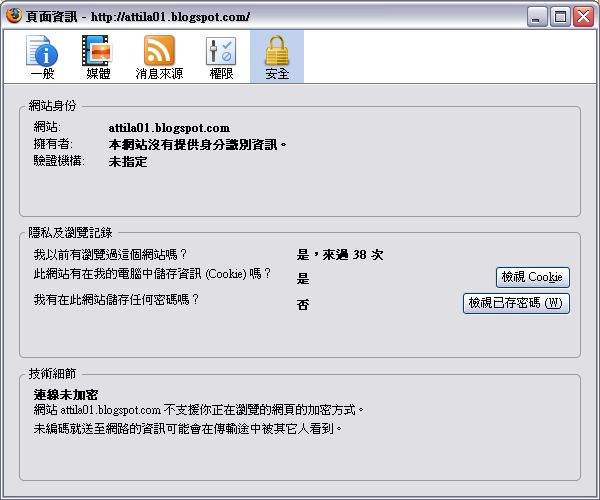

瀏覽網頁要小心！Firefox的幾個安全祕訣

惡意程式的傳播，幾乎都是透過網路居多，即使只是瀏覽個網頁，都有可能會遭受惡意程式的侵害。除此之外，偽造的網頁和釣魚網站，也虎視眈眈的瞄準著那些大意的朋友。雖然最好的方法是自己要小心，不過上個網頁就神經兮兮的先檢查看看是不是釣魚網站，說起來有點不符合人性，況且有時候正在找資料，壓根兒就不會記得要小心。
如果網頁瀏覽器有協助把關的功能，相信就能減輕使用者的負擔，並且減少上網的心理壓力，多一份安心的感覺。Firefox 這個自由軟體陣營中最主要的瀏覽器向以安全性著稱，只要能善用相關的功能和設定，就能增加瀏覽網頁的安全性。
當然，在此也要提醒大家：軟體的安全功能無法達到100 % 的效果，畢竟正邪雙方的技術都不斷的進步呀！人為的安全檢查還是不可缺的！
下載
要使用Firefox，可到這裡下載：https://www.moztw.org/
在此可以選擇適合的版本，包括作業系統和語言，大家就根據自己的需要來下載。至於安裝，其實蠻容易的，也沒有什麼特別需要注意的，在此就不浪費篇幅。
使用防釣魚網站功能
步驟一
開啟Firefox後，按一下功能表的「工具＼選項」。
補充說明：
在Ubuntu Linux下的Firefox並不叫做「選項」，而是「偏好設定」，開啟的地方也不大一樣，是在功能表的「編輯＼偏好設定」。
步驟二
在「安全」這個項目底下，預設的「當我正瀏覽的網站可能是有害網站時告訴我」和「當我正瀏覽的網站可能是偽造網站時告訴我」二個項目是開啟的，這二個就是預防釣魚網站用的，只要啟用後，開啟一個新網頁前會先連線到伺服器去比對，看看所瀏覽的網頁安不安全。如果沒有勾選，最好在看到本文之後，趕快把它們勾選起來吧！
步驟三
回到Firefox後，在網址列輸入想連結的網站名稱，不一定是要完整的網址，即使只是名稱或名稱的一部分也一樣，這裡以「中華郵政」為範例。
步驟四
此時會有一段忙碌的時間，然後會連結到正確的網頁。這段時間，就是透過預設的搜尋引擎Google先搜尋網頁，然後是透過防釣魚功能檢查，直接連到正確的官網。
用這個方法不但能快速找到想連結的網頁，而且實際上也比較安全。不過要注意的是，有時候找到的網頁不見得是自己真正想要的，尤其想找的是產品或新聞，那麼出現的就是Google的搜尋結果頁面。
補充說明：
有些公司會和Mozila合作，推出特定的客製化版本，直接在網址列中輸入資料的方法可能會無效或結果和這裡不一樣（如奇摩火狐），建議大家使用標準版的Firefox會比較好。
密碼的管理
許多網路服務都需要密碼，不過密碼一多，很容易就忘記。要是什麼都紀錄在瀏覽器，又有安全方面的風險。在Firefox內，就有密碼管理相關的功能，能有效降低相關的風險，有需要的朋友不妨使用看看。
步驟一
一樣在選項視窗的安全項目內，如果需要記住密碼，可以勾選「記住每個網站的密碼」，那麼在某個網站輸入密碼的時候，就會同時把密碼紀錄起來。不過這樣有個缺點，就是別人若使用這台電腦，那他就能登入這些已經被記住密碼的網站，個人的隱私和機密也就不保了。所以最好順便勾選「使用主控密碼」，意思就是說，如果要進入需要密碼登入的網站，那麼Firefox就會要求輸入主控密碼，沒有輸入或輸入錯誤就無法登入該網站。
步驟二
一勾選主控密碼後，就會出現「變更主控密碼」的視窗，然後自行設定需要的密碼即可。密碼最好是英文和數字混合，也要有一定的長度和難度（可參考底下的「密碼品質測量計」顯示的結果，越長表示密碼的難度越高），最好還有自己的記憶規則，否則忘了就不妙啦！
補充說明：
在上圖中，我們可以看到一個「已存密碼」的按鈕，按這個鈕之後可以看到自己在哪些儲存了哪些網站的密碼，若不希望儲存起來，可以在這裡加以刪除。
啟用警告訊息
在網頁上填寫資料是難以避免的事，不過對方的網頁最好是有相關加密措施會比較好。許多網站會採用各式各樣的加密技術，不過有些還是沒有。為了方便讓我們知道所瀏覽的網站是否採用加密的措施，Firefox上只要簡單的幾個步驟，就可以在瀏覽時告訴我們喔！
步驟一
在選項視窗的安全項目下，按最底下的「警告訊息」旁的「設定」按鈕，好選擇需要的安全警告項目。
步驟二
在出現的小對話視窗中，根據自己需要勾選要警告的項目，如此當瀏覽的網頁符合其中的項目時，就會通知我們該網頁的狀況。這樣子我們就可以判斷一下，這是不是一個夠安全的網頁，輸入資料是否有被竊取的風險。
警告訊息一
如果前往的是一個採用了加密技術的網頁，就會出現如上的對話視窗，告訴你這個網頁的狀況。
警告訊息二
如果要離開加密的網頁，就會出現如上的警告，通知你在之後的瀏覽行為，最好不要輸入個人的隱私或機密資料。當然，在前面的安全警告項目中，得要勾選「離開加密頁面時」。
警告訊息三
如果在未採用加密或安全措施的網頁輸入資料時，就會出現上圖的警告。除非大家能確定輸入的資料沒有安全方面的顧慮（如搜尋產品資料），那麼就按「繼續」來完成輸入動作，否則最好選擇取消，並且不要在該網頁輸入資料，以免有被竊取的風險。
補充說明：
設定警告訊息會造成一些瀏覽上的不便，因為可能會常常跳出這些對話視窗，用久了不但覺得煩，也會降低瀏覽網頁的效率。因此如何在安全和方便之間拿捏，大家得要自己好好思考。
清除隱私資料
Cookie的應用，在網路世界中幾乎無所不在，有些網頁若是不接受Cookie，就無法正常顯示。雖然很多網頁公告的隱私權政策是不會非法應用這些資料，不過是否會真的遵行，瀏覽者是無從判斷起的。要是不希望這些東西留在自己的電腦中，那麼先學會如何正確清除吧！
步驟一
開啟選項視窗後，切換到「個人隱私」的項目內，在最底下有個「隱私資料」的項目，如果希望結束Firefox時就一併把隱私資料清除掉，那麼可以勾選「結束Firefox時清除隱私資料」。不過在這之前，得要先設定好要清除哪些資料，所以按一下右邊的「設定」。
步驟二
這時會出現一個新對話視窗，裡面是可以清除的範圍，大家可以根據自己的需要加以勾選。要注意的是「已存密碼」這個項目，這裡指的是已經儲存的各網站密碼，不包括主控密碼在內。
檢視頁面資訊
如果想要知道瀏覽的網頁相關的安全狀況或隱私設定，檢視「頁面資訊」是一個不錯的功能，它可以顯示相關的訊息讓我們知道，包括曾經瀏覽過的次數喔！雖然它不能算是安全功能，不過卻有助於我們瞭解瀏覽網頁的一些安全資訊，可作為判斷是否為安全網頁的參考，是一個不可不知道的功能。
步驟一
開啟想檢視的網頁後，按功能表的「工具＼頁面資訊」。
補充說明：
開啟「頁面資訊」的另一個方法是在網頁上的空白處（也就是非文字和圖片的地方）按滑鼠右鍵，從出現的快顯功能表上點選「檢視頁面資訊」。
步驟二
這時會開啟「頁面資訊」視窗，在「一般」這個項目下，可以知道一些基本資料，最底下也出會出現該網站的連線是否為加密。如果所檢視的加密的網站，還會列出加密的方式和等級。
步驟三
按一下「權限」這個項目，可以看到各種在瀏覽器中關於特定顯示項目的設定，我們可以針對這個網頁加以設定，下次在瀏覽這個網頁時，就會使用新的設定值。
步驟四

切換到「安全性」這個項目，這裡可以看到有關安全的項目，包括檢視紀錄、是否儲存了Cookie、是否儲存了密碼等。
以上是使用Firefox時，幾個和安全有關的重要設定，相信適當的運用，必定能讓我們瀏覽網頁時多一分安全保障！